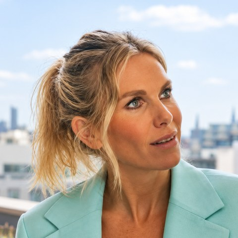

Taking Mastry to SMBs.
Our response to the Mastry eComm agency briefing i.e. how we'd help, where we've done it before and what we'd need from you. Paid media is with JAA, our media partner.
How to use this document.
This is a document to read at your own pace. It moves page by page, and a lot of it can be selected to show more.
Use the arrow keys on your keyboard, or the arrows in the bar at the bottom. On a phone, swipe left or right.
The page name in the middle of the bar opens a list of every page. Each page has its own link, so you can send someone straight to it.
When a link takes you several pages on, a 'Back to' button appears beside the bar. It returns you to the page you came from.
Anything with a violet dot can be selected, and there's more behind it. Try the other one.
That's all there is to it. You'll find these on the diagrams, the examples and the workstreams.
Some pages are longer than the screen. Scroll down to see the rest.
The figures, timings and projections in this document are indicative. They're our estimates from published data and from what we know so far, and they're there to show how we're thinking. The real numbers come from the work itself, once we've seen the product and your data.
c.£25.5 billion
This is what small and mid-size businesses in the UK invest in training their people each year. It's spread across three sizes of business, and the two smaller ones account for most of it.
is what these businesses pay to external training providers, shown here to scale against the total. About half of the total is the wages of people while they train, so for a product that businesses pay for, like Mastry, this is the number we'd work from.
Sources: Business population estimates for the UK and regions 2026 (GOV.UK) for the number of businesses and people employed, and the Employer Skills Survey 2024 (Department for Education) for training investment per employee. The £ figures are our estimates from the two and not published figures.
Seven questions to answer, three jobs to do.
We can help you answer all seven questions in the brief. While the brief lists seven, for us it comes down to three jobs, and they're jobs we've done before.
Reposition Mastry for SMBs
What Mastry is for a small business when there's no sales team to explain it, who it's for and how it's priced.
Where we've done it: Cisco Designed. JAA works with us on audience.
Go to job 1Build the means to sell and support it
The self-serve journey in the product, the website and commerce behind it, and the support model around it.
Where we've done it: Grantify, Help for Heroes
Go to job 2Attract, convert, then scale
Launch it to the right SMBs, run it until it's steady and hand a working programme to your team.
Where we've done it: Grantify, with JAA on media
Go to job 3Your seven questions.
The brief asks which questions we can help answer and which we can't. We can help with all seven, although two of them (02 and 06) come with a qualification.
Selling to SMBs.
How selling to an SMB differs from selling to an enterprise, who's made the move and which SMBs we'd start with.
Selling to enterprise vs selling to SMBs.
An enterprise buys with a sales team on hand to explain it, whereas an SMB has a web page and a few minutes. Each of your seven questions comes from one of these differences. Select a stage to see what it means for Mastry.
Sales outreach, events and referrals
Search, AI answers, paid media, ABM to segments and word of mouth
Most SMBs have to find Mastry themselves, so the site architecture, SEO, AEO and paid media become the top of the funnel. Alongside that we'd run one-to-many ABM to segments and clusters, with one-to-one ABM for larger SMBs where the account is worth enough to justify it.
Demos, pilots and security reviews
They try it themselves, in a free trial
The trial does the job of the demo. Sign-up, onboarding and first use all happen inside the product with nobody to guide them, and this is where the conversion rates are decided.
An annual contract, negotiated and paid by invoice
By card, monthly or annual, from a price list
Nobody negotiates, so the price list has to be understood without help. Plans and tiers need to make sense to someone choosing on their own.
An implementation or customer success team
They set up the account and add their team themselves
Once they've paid there's no implementation team. Setting up the account, adding the team and rolling it out all have to be designed into the product.
A named account manager
A help centre, chat and tickets
Support has to work at a cost that fits what an SMB pays. That shapes the support model, the tooling and the team.
An account manager expands the contract
They add people and move up a plan themselves
Growth comes from customers adding people and moving up a plan without being sold to, so the upgrade path and keeping customers matter as much as the first sale. The larger ones need a route to an enterprise contract.
The enterprise lane shows the general pattern. We'll replace it with how you'll sell Mastry to enterprise from January TBC
From micro to enterprise, here's who sells to both.
Your brief asks for examples from the wider industry. Salesforce started with enterprise and added a version SMBs buy online, which is the move Mastry is making. HubSpot went the other way.

From enterprise sales to a version SMBs buy online
Salesforce is the world's biggest CRM company and has historically sold to large organisations through sales teams. In 2023 it launched Starter Suite, a simple, low-cost version that SMBs can buy online.
Source: Salesforce Starter Suite
From SMBs online to enterprise
HubSpot makes software for marketing, sales and customer service. Unlike Salesforce it started by selling to SMBs online, and in 2018 it launched Enterprise versions of its products for larger organisations.
Source: HubSpot pricing
Both companies changed the same four things between SMB and enterprise: how it's bought, how it's priced, what's in the product and how it's supported. Those are the things your brief asks about. Salesforce didn't sell its enterprise product to SMBs for less. It made a simpler package with its own way of buying it. HubSpot shows the other end i.e. the route from self-serve up to an enterprise contract.
A billion-pound opportunity, across three different segments.
A business of five people and one of two hundred buy training and software in different ways. This is our starting point for question 03 i.e. which SMBs are the right fit for Mastry, who the trial users are and who the buyers are.
50 to 249 employees
10 to 49 employees
1 to 9 employees
Most of the £25.5 billion isn't cash. Across the UK about half of what the survey counts as training investment is the wages of people while they train, and only 7% is fees to external providers. For a paid product like Mastry the £1.9 billion is the closer comparison. The averages also hide a lot of zeros e.g. only 44% of workplaces with 2 to 4 employees provided any training.
About 1.46 million UK businesses have between 1 and 249 employees. 82% of them are micro, 15% small and 3% mid-size, but each band employs roughly 4 million people. If Mastry is priced per seat, 39,000 mid-size businesses hold nearly as many seats as 1.2 million micro businesses. Average turnover runs from about £590,000 for a micro business to about £24.6 million for a mid-size one, and turnover per person is highest in mid-size.
Which band we'd go after first and why TBC Size alone won't be enough, so we'd add a second cut e.g. sector, or how much the business depends on its owner.
The ICP is a hypothesis until there's spend behind it. With JAA we'd test sectors through paid media, then put budget into the ones that perform, either for volume or for efficiency.
Business numbers. Business population estimates for the UK and regions 2026 (GOV.UK), private sector businesses at the start of 2026, rounded. The release is labelled 'official statistics in development' and its employment figures are indicative. The bands leave out the 4.1 million businesses with no employees. The averages are means worked out from the release's totals, so a few very large businesses pull them up and the typical business in each band will sit below them. Turnover leaves out financial and insurance businesses.
Training investment. Employer Skills Survey 2024 (Department for Education), training investment per employee by size of workplace, multiplied by the headcounts above. These are our estimates and not published figures. We've mapped the survey's size bands to ours, and mid-size is the least certain because the survey's top band is '100 or more', so the total could sit anywhere between about £24 billion and £27 billion. The survey counts each workplace separately and not each company, so a small branch of a large company sits in a small band. It also leaves out workplaces with one employee. Its fieldwork ran from June 2024 to January 2025 and the headcounts are for the start of 2026.
The three jobs.
What we'd do in each, what you'd do, and where we've done it before.
Job 1. Reposition Mastry for SMBs.
The first job is working out what Mastry is for a small business when there's nobody there to explain it. This covers your questions on ICP (03) and pricing (01).
Share enterprise pricing, deal data and customer research under NDA, and sign off pricing and packaging.
Most of your questions are about how to sell and support Mastry. We think they all come back to this first job. You can't price it, build the website or brief the ads until you've agreed what an SMB thinks it's buying.
Cisco Designed
Cisco Designed is Cisco's portfolio for small business, and Oliver Budworth, our strategy lead, developed its brand strategy in 2021 in a previous role.
The work found that Cisco's size, which is an advantage with enterprise buyers, counted against it with small businesses. It also found that owners don't need to be passionate about technology to want to buy it.
The proposition was built around the owner's business rather than Cisco's products; 'Master your business'.
Mastry has the same question to answer i.e. what does an enterprise product do for a small business, in the owner's own words?
We'd put Mastry's SMB proposition through the same three tests.
The research looked at four things: the culture small businesses operate in, the customer, the category and the company.
The insight that turned the work: they didn't start a business to run IT. They started it to run their business.
Small businesses saw Cisco's size as a reason not to buy. The work gave that size a job to do for them.
The starting thought was 'Small business deserves good technology'. That's a belief and it describes what Cisco gives. A proposition has to describe what the owner gets, so the final line had to pass three tests.
Three routes were scored against the tests.
Master your business.
Not your network. Not your IT. The business you built, your way.
Job 2. Build the means to sell and support it.
An SMB needs to find Mastry, try it, buy it, get set up and get help with it without speaking to anyone, and it needs to keep working for them as they grow. Your questions on product (02), website (04) and support (07) sit here, and for us they're parts of one experience.
The changes to Mastry itself are built by your product and engineering team. We'll design them and stay with your product team through delivery, bringing what we know works in self-serve. That makes your engineering capacity in H1 the main dependency for the SMB launch, so it's the first thing we'd want to understand.
Where we've done it
From a free platform to one customers buy from
Grantify is a funding platform for SMBs. Working closely with their product and commercial teams, we took a free-to-use platform and turned it into something customers could buy from directly.
A service redesigned from end to end
We redesigned Help for Heroes' core service from end to end, including the operating model, a new support role and a capacity model the board could test.
The map below is the target operating model. It follows one journey in five stages, from someone wondering whether Help for Heroes is for people like them through to staying connected after their support ends. For each stage it sets out what the person is thinking, feeling and doing, and what has to be in place behind the scenes i.e. the teams, content, processes, platforms, data and measures.
It's a different sector, but it's the same method we'd use for Mastry's SMB support model: start from what the customer is trying to do at each stage, then work out what the business needs in place to meet them.
Job 3. Attract, convert, then scale.
With the proposition set and the means to buy in place, the job becomes getting Mastry in front of the right SMBs and converting them. This covers your questions on paid media (05) and conversion (06).
JAA's media approach is to define and segment the relevant sectors using LinkedIn and your own client insights, sort them into four categories, then put the effort into the sectors with the highest potential.
Creative and landing pages for the campaign, and ABM to the segments we're testing, with tracking in place before any spend.
A broad campaign on LinkedIn with several creative routes, running for at least a month.
Audiences are grouped into buyers, approvers and users, recognising that the smaller the business, the more likely these roles are to merge. The budget needs to be big enough to get a reading without investing too much too early.
Output: immediate engagement from audiences, and insight into engagement by sector and by job title, aligned with your own client insights. This decides where effort is best spent.
Replace the assumptions in the funnel model with real rates, and adjust the journey where people drop out.
Sort the sectors and audiences into four categories.
Not all of them will be equally attractive, and running the same campaign with the same objective across every sector would limit growth. Three of the categories get their own campaign, each with its own objective. The fourth is left alone, because you can't be all things to all people.
Cost efficient but limited scale
Efficient, but with limited potential to grow. These sectors are easy to recruit through LinkedIn and are kept ticking over, with limited effort beyond that.
Cost efficient and scalable
The sweet spot. They've already bought into the need and have few challenges around onboarding. LinkedIn stays the priority, with small sector-specific tests beyond it e.g. trade shows, trade press and sector-specific audience builds.
Scalable but not immediately cost efficient
Sectors that have shown engagement, or should be engaging, but with limited uptake at first. This is where the biggest potential is. The work is to find what's holding them back e.g. AI caution, lack of resources or investment, then answer it with bespoke creative, messaging by role and building trust beyond digital channels.
Agree spend with you against the model, and hand the running of it to your team.
Ticking over and Flywheel are the easy wins, so we'd establish those first or run them in parallel with Max effort, depending on appetite. Building trust helps every audience, and broader, more trusted formats come later e.g. AV, targeted sporting events, trade shows and trade press, financial newspapers and audio. We'd prove the system delivers before taking those on.
We direct the work with JAA, so you have one point of contact. Launch budget TBC
The funnel model.
Nobody can give you real conversion rates until SMBs are able to try Mastry. Our starting point is a model built on benchmarked assumptions, in a spreadsheet where you can change the inputs and see what happens. Once traffic is running we'll replace the assumptions with real rates.
The rates are benchmarked assumptions. Benchmark ranges for B2B and SMB audiences from JAA TBC
Once tracking is in place and traffic is running, the assumptions are replaced with real numbers and we'd agree spend with you against them.
Where we've done it
From paused spend to a working demand engine
When we started, Grantify had no marketing team and had paused spend because the leads were poor. We built the proposition and then the engine behind it; paid search, LinkedIn, outbound, landing pages, a HubSpot rebuild, nurture and tracking.
The first campaign.
For the first time.
With tracking set up before the spend.
Launched, tested and rolled out within a month
During Covid, JAA launched and grew Vycel, a commercial deep cleaning product that saw a massive opportunity.
Return on ad spend.
To gauge interest and uptake.
Sector-specific messaging and targeting across trade press and digital audience builds, from banks to hairdressers to restaurants.
From a single LinkedIn approach to campaigns built by sector
CMI and Willis Towers Watson had the same dilemma. Both were relevant to specific jobs and industries, but had become too focused on building campaigns in LinkedIn.
JAA worked with them to analyse the data they already had i.e. which sectors were warmer, and which were an opportunity but needed more effort. That made the roll-out easier: sector-specific campaigns using the best opportunities for each sector, with a wider creative scope that allowed for more considered, long-term thinking.
The short-term effect, in both cases.
The longer-term improvement.
How we'd run it.
Seven workstreams, how they run over six months and the risks we'd raise.
Seven workstreams, one team.
The three jobs break down into seven workstreams. We'd run them as one programme, because pricing, the self-serve journey and the conversion assumptions depend on each other. Select a workstream to see who does what.
Define the SMB ICP, trial users and buyers, with JAA on audience. Develop the proposition and messaging. Design plans, tiers and price points.
Share enterprise pricing, deal data and customer research under NDA. Sign off pricing and packaging.
Map the enterprise and self-serve flows of work. Design the trial, onboarding, plan limits and upgrade prompts. Provide flows, prototypes and acceptance criteria.
Build the changes in Mastry. Own the roadmap and release dates.
Site architecture, SEO and AEO, pricing page, sign-up, payments and billing. Design and build, with analytics and attribution in place before launch.
Provide access to the domain, payments provider and product APIs. Legal and finance sign-off on billing terms.
Design the SMB support model and its cost to serve. Select and set up tooling. Write help content. Define the route into your enterprise team.
Decide the resourcing level. Staff the support team.
Channel strategy, budget model, audiences, ABM, creative and landing pages. Direct JAA on media planning and buying.
Approve budget. Brand and compliance sign-off.
Build the conversion model, KPI framework and dashboards. Measure and adjust through the project.
Share enterprise funnel data as a baseline. Agree the targets the programme is held to.
Define the roles, documentation and tooling needed to run it. Phased handover.
Hire or redeploy the team. Own the programme after handover.
The flow of work, step by step
Each workstream breaks down into a handful of steps. This shows them in order, and who does each one.
- YouShare enterprise pricing, deal data and customer research
- Thrive with JAADefine the ICP, trial users and buyers
- ThriveDevelop the proposition and messaging
- ThriveDesign plans, tiers and price points
- YouSign off pricing and packaging
- ThriveMap the enterprise and self-serve flows of work
- ThriveDesign the trial, onboarding, plan limits and upgrade prompts
- ThriveProvide flows, prototypes and acceptance criteria
- YouBuild the changes in Mastry
- YouRelease, on your roadmap and dates
- YouProvide access to the domain, payments provider and product APIs
- ThriveSite architecture, SEO and AEO
- ThriveDesign and build the pricing page, sign-up, payments and billing
- YouLegal and finance sign-off on billing terms
- ThriveAnalytics and attribution in place before launch
- ThriveDesign the support model and its cost to serve
- YouDecide the resourcing level
- ThriveSelect and set up tooling
- ThriveWrite help content
- ThriveDefine the route into your enterprise team
- YouStaff the support team
- ThriveChannel strategy and budget model
- YouApprove budget
- ThriveAudiences, ABM, creative and landing pages
- YouBrand and compliance sign-off
- JAAMedia planning and buying, directed by us
- YouShare enterprise funnel data as a baseline
- ThriveBuild the conversion model
- ThriveKPI framework and dashboards
- YouAgree the targets the programme is held to
- ThriveMeasure and adjust through the project
- ThriveDefine the roles, documentation and tooling needed to run it
- YouHire or redeploy the team
- ThrivePhased handover
- YouOwn the programme after handover
The order of the steps is our starting view. Select a workstream in the list above or in the row of headings here, and both change together.
Over six months.
Six months is the example in your brief. The dates depend on the January enterprise launch, the SMB launch later in H1 and your product team's capacity.
The darker bars are delivered with JAA: audience in workstream 1 and media in workstream 5.
Risks we'd raise.
The brief asks for the risks you haven't factored in.
These are our starting points.
The work gets done and Mastry doesn't land with SMBs.
For us the biggest risk is that everything gets built and it doesn't resonate with small businesses, so they don't adopt it. We don't see why that would happen, because there are plenty of examples of other brands that have made this move, and Mastry feels like a remarkable product. It does mean the biggest task isn't building all of this. It's communicating it to SMBs in the right way.
Working together.
The team you'd work with, how we'd get started, the information we'd need from you and how the work moves in-house.
The team.
We've put together one team from two companies for this brief. Thrive leads the strategy, the product and service design and the build, and JAA leads media planning and buying. Each person is here because the brief needs what they do. Individual roles on the project TBC
Thrive is a strategy company for organisations on the move.

JAA is an independent media agency and our media partner on larger programmes.
From 'let's go' to the work starting.
If you say 'let's go', this is what we'd do together before the workstreams start. It's the set-up for the project and it sits ahead of the six-month plan.
Our starting view · timings TBC- 1NDA and informationYou share the information listed on the 'What we'd need from you' page, under NDA.OutputWhat we need to scope and cost the work
- 2Kick-off sessionA working session with your product and marketing leads to go through the three jobs and agree what we scope first.OutputAgreed priorities
- 3Scoping documentWhat's in and what's out, the deliverables for each workstream, what we need from your teams and the costs.OutputScope and costs for you to sign off
- 4RACIWho is responsible, accountable, consulted and informed for each workstream, across Thrive, JAA and your teams.OutputAn agreed RACI
- 5Project planThe phasing set against your January enterprise launch, the SMB launch later in H1 and your product team's capacity.OutputA plan with dates and milestones
- 6Ways of workingHow often we meet, how we report, the tools we share and who signs off what.OutputWorkstream 1 starts
By the end of set-up you have a scope and costs you've signed off, a RACI that says who does what on both sides and a plan with dates.
What we need from you.
To scope and cost the project we'd need the information below, under NDA.
Running it in-house.
The brief is clear that you want to run this long term with limited in-house resource, so handover isn't something we'd leave until month six. This is who runs each part, and how that changes.
Now
While we set it upWe run it with JAA while it's being set up. Your product team builds the changes to Mastry from the start, which is why that one is shared.
Immediate future
As each part is ready, through to handoverYour team takes on the parts closest to the product and the customer. We stay alongside on the parts that are still being tuned.
Longer term
After the projectYour team runs the programme. We stay alongside on content and campaigns, where we can keep adding value. Media buying can stay with JAA or move in-house, and that choice is yours.
Thank you.
We'd welcome the chance to talk this through with you and your team.